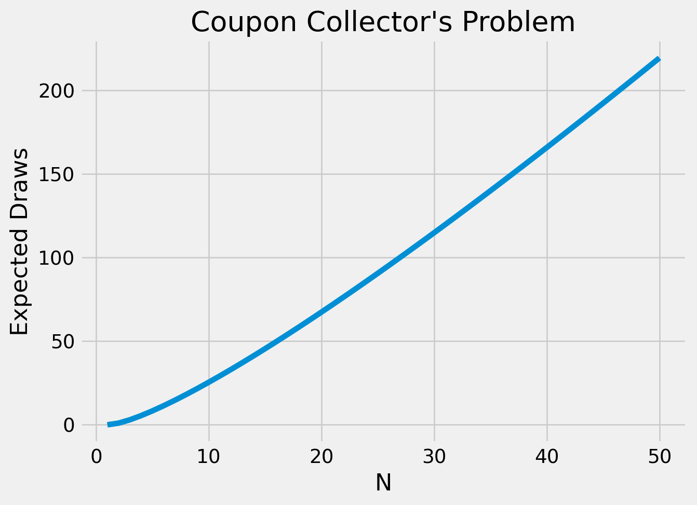
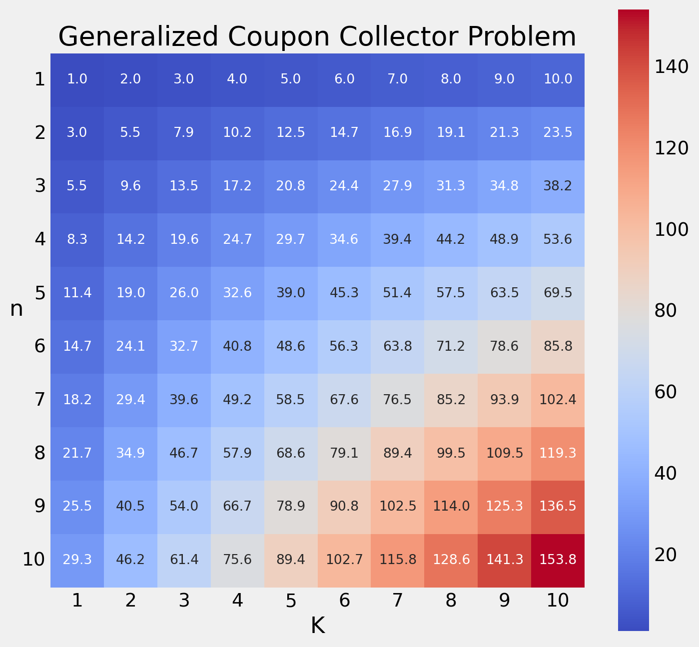

Coupon Collector’s Problem Generalized to K sets of coupons
probability
Published
January 23, 2023
Warmup
The traditional coupon collector’s problem asks the following question:
If there are n different kinds of coupons, and all coupons have the same probability of being drawn, how many coupons do you expect to draw with replacement to collect all kinds of coupons?
Wikipedia has a good explanation, so I will use that as a template for my calculation.
Let \(T\) be the random variable representing the number of coupons we draw before collecting the entire set of coupons. We can decompose \(T\) into the sum of \(n\) random variables, \(t_i\), where \(t_i\) is the number of coupons drawn to get the \(i^{th}\) distinct coupon after \(i - 1\) distinct coupons have already been drawn.
A common mistake is to decompose \(T\) into random variables \(t_i\), where \(t_i\) represents the number of coupons drawn to collect coupon \(i\).
This is incorrect because we are likely going to be double-counting coupon draws. Let’s look at a simple example where \(n = 2\), and we draw coupon \(1\), then coupon \(2\). This method would set \(t_1 = 1\), \(t_2 = 2\), and \(T = 3\). Obviously this isn’t correct, but it’s easily mistakable when you haven’t seen the right way to approach the problem first.
Now the problem is finding what the general solution is for a number of the form \(E[t_i]\). \(E[t_i]\) captures the expected number of coupon draws to get the \(i^{th}\) distinct coupon after \(i - 1\) distinct coupons have already been drawn. We know that if \(i - 1\) out of \(n\) coupons have been drawn already, there are \(n - i + 1\) remaining coupons we still need to draw. So the probability we draw a new coupon is \(\frac{n - i + 1}{n}\). \(t_i\) is satisfied on the first such success, so it has a Geometric Distribution. The expected value of a geometric random variable is \(\frac{1}{p}\), or in our case, \(\frac{n}{n - i + 1}\). We can now go back and solve for \(E[T]\).
where \(H_n\) is the \(n^{th}\)Harmonic Number. The harmonic numbers don’t have a closed form solution, but we can easily calculate them for small enough \(N\). We can visualize our solution using Python.
import matplotlib.pyplot as pltplt.style.use('fivethirtyeight')N =50def harmonic(n):returnsum(1/ i for i inrange(1, n +1))expectations = [n * harmonic(n) for n inrange(N)]plt.plot(range(1, N +1), expectations)plt.gca().set(title="Coupon Collector's Problem", xlabel='N', ylabel='Expected Draws')plt.show()

Generalizing to K sets of Coupons
A natural extension to this warmup is asking how things change when we need to collect K of each coupon. Unfortunately, we need to take a completely different approach than we did for the case of \(K = 1\). We must now leverage combinatorics.
First, let’s define a few terms. We are trying to find the expected number of coupons we must draw before getting \(K\) of each, or \(E_K[T]\). \(T\) takes on integer values, so we can rewrite our expectation as:
where \(p_i = P(T > i)\). The interpretation of \(p_i\) is the probability that we fail to collect \(K\) complete sets in \(i\) draws. Since there are \(n\) different kinds of coupons, there are \(n^i\) ways to draw \(i\) coupons. All the possible ways to draw these coupons can be represented as the polynomial:
If we were to expand this polynomial, each term would represent a combination of possible draws. For example, one of the terms in the expansion would be \(x_1^3x_5x_9^7x_{12}^{i - 11}\). This term represents the event of pulling 3 of coupon #1, 1 of coupon #5, 7 of coupon #9, and the remaining \(i - 11\) being coupon #12. Of course there are multiple ways (permutations) to pull this combination of coupons, so there would also be a coefficient on the term indicating how many ways this can be done.
Note
Though not core to the problem at hand, we can quickly discuss what that coefficient would be. Sticking with our previous example of \(x_1^3x_5x_9^7x_{12}^{i - 11}\), we start by thinking about how we can assign an order for these given amounts of coupons. We have \(i\) spots, and 3 of coupon #1, so there are \({i \choose 3}\) ways to pick where the first kind of coupon go. After these are assigned, there are \(i - 3\) spots remaining, so there are \({i - 3 \choose 1}\) ways to assign the singular coupon #5 to a spot. Following this reasoning will yield \({i - 4 \choose 7}\) and \({i - 11 \choose i - 11}\) as the remaining ways to assign the respective coupons. Multiplying all of these “choose” operations gives us the total ways to assign the coupons.
The result is just the total ways you can arrange \(i\) distinct coupons (suppose coupons of the same type were somehow distinguishable), divided by the number of ways a given ordering is duplicated because coupons of the same type are not actually meaningfully distinguishable.
Now, suppose we expanded the polynomial above fully. The terms where all \(x_j\) are raised to a power \(\ge K\) represent successfully collecting \(K\) sets of all \(n\) coupons. If we remove all terms representing completed sets, then we are left with only incomplete collections. We can denote this removal process with the notation \(\{(x_1 + \ldots + x_n)^i\}_K\). “The Double Dixie Cup Problem” [1] defines this formally:
If \(P(x_1, \ldots, x_n)\) is a polynomial or power series we define \(\{P(x_1, \ldots, x_n)\}_K\) to be the polynomial, or series, resulting when all terms having all exponents \(\ge K\) have been removed.
Now, note that if we evaluate \(\{(x_1 + \ldots + x_n)^i\}_K\) at \(x_1 = \ldots = x_n = 1\), we get a number that represents the number of draws that result in incomplete collections. Further, \(\frac{\{(x_1 + \ldots + x_n)^i\}_K}{n^i}\) evaluated at all 1’s is just the probability that we fail to complete \(K\) collections in \(i\) draws, or \(p_i\). This takes us a step forward in our expectation calculation.
But finding a way to evaluate the summand is not immediately obvious. To do this, we must find something we do know that looks similar to the above form, namely the exponential Power Series. As a reminder the power series is:
We’re getting closer, but we still need to encapsulate the polynomial in the \(\{\cdot\}_K\) operator. To do this requires a little leap of faith. Using exponent rules and the single-variable exponential power series, we can equivalently find that:
What we can gleam from this is that in this polynomial expansion, you are picking how many coupons were drawn of each type, instead of fixing a number of draws \(i\) like we did previously. If we ignore the coefficients for now and just focus on the \(x_j\)’s, we can see how for any possible combination of coupons you can think of, there is a way to get that combination by picking the correct term in each of the \(n\) taylor series expansions.
Thinking in the same vein, we can represent all the successful ways of achieving \(K\) complete sets by only including part of the taylor series expansions for each of the \(e^{x_j}\) terms. The part of the taylor series expansions that yield all the complete collections is:
Whichever term you pick from each expansion, the exponent will always be at least \(K\), which means each term represents a different way to complete \(K\) sets of coupons. Since \(p_i\) represents the probability of failure, we want to get rid of these terms that represent successes. Doing just that and simplifying a little leaves us with:
And by the discussion above that interpreted the subtraction of the product of the different power series expansions as removing all the scenarios that resulted in success, we claim that this expression is equal to:
which is almost what \(E_K[T]\) is equal to. The only difference is that this denominator is \(i!\) compared to the desired \(n^i\). Luckily, there is an identity (that I have previously never heard of) that allows us to interchange between the two:
We are able to switch the order of the sum and integral operators as a result of Fubini’s Theorem. Also, notice in line 3 that the summand isn’t exactly the same format that it was in \(F\). But this isn’t a problem because the only new term is \(t^i\), which appears in the power series for \(e^t\). The affect is that all exponents are multiplied by a factor of \(t\). Now, remembering that setting \(x_1 = \ldots = x_n = 1\) effectively calculates the ratio of incomplete collections to possible collections, we can simplify the above equation dramatically.
And that’s it! It’s okay to be a little bit unsatisfied at this answer since it does contain an integral that isn’t solvable by hand (to my knowledge). However, in the next section, we will be looking at how we can leverage Python to get more concrete answers for some example cases.
import numpy as npfrom scipy import integrateimport matplotlib.pyplot as pltimport seaborn as snsplt.style.use('fivethirtyeight')factorial = np.vectorize(np.math.factorial)def S(K, t): arr = np.arange(K)return np.sum(np.power(t, arr) / factorial(arr))def integrand(t, K, n):return1- (1- S(K, t) * np.exp(-t))**nn_range = np.arange(1, 11)K_range = np.arange(1, 11)results = np.empty((n_range.size, K_range.size))for n in n_range:for K in K_range: result, err = integrate.quad(integrand, 0, np.inf, args=(K, n)) results[n -1, K -1] = n * resultfig, ax = plt.subplots()sns.heatmap(results, cmap='coolwarm', square=True, fmt='.1f', annot=True, annot_kws={"size": 10}, ax=ax)ax.set_title("Generalized Coupon Collector Problem")ax.set_xlabel("K")ax.set_ylabel("n", rotation=0)ax.set_xticklabels(K_range)ax.set_yticklabels(n_range, rotation=0)fig.set_size_inches(8, 8)plt.show()

References
[1]
D.J. Newman, The double dixie cup problem, The American Mathematical Monthly. 67 (1960) 58–61. http://www.jstor.org/stable/2308930 (accessed January 23, 2023).